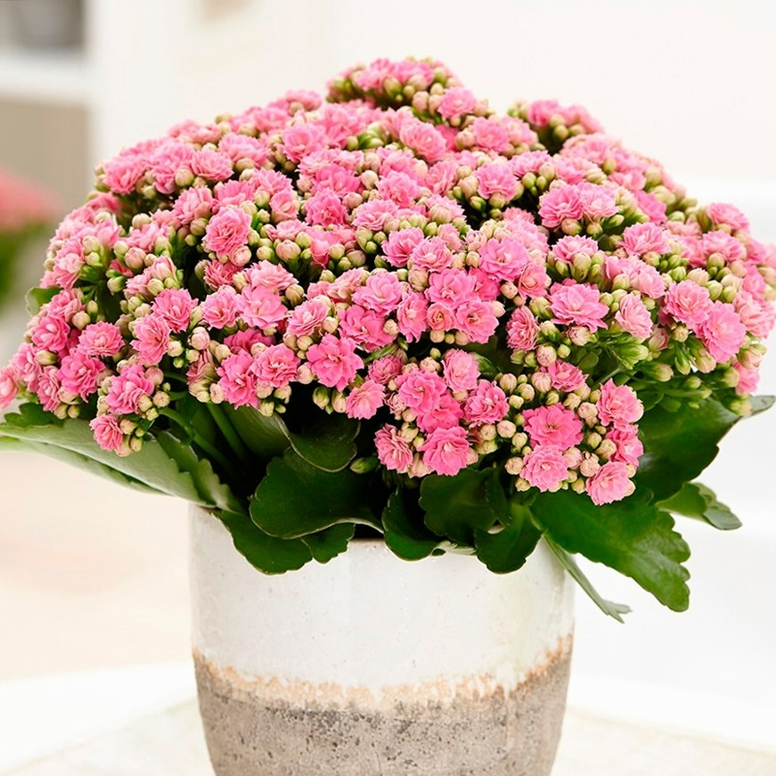

Комнатные цветы
Азалия
Азалия – многолетнее красивоцветущее растение
семейства Вересковые. Комнатная азалия представляет
собой небольшой кустик высотой 12-50 см,
отличающийся сильным ветвлением. Цветок растет
очень медленно: за год прибавляет несколько сантиметров.
Окрас обычно яркий, одноцветный: красный, белый,
розовый, фиолетовый. Выведены сорта с двухцветными
и пестрыми лепестками.
Родина: Китай, Япония, Индия
Амариллис
Амариллис – многолетнее однодольное цветковое
растение семейства Амариллисовые. Имеет прикорневые
листовые пластины вытянутой формы размером 60 см,
растущие двурядно. Во время цветения на кусте
образуются большие соцветия в форме зонтика,
в состав каждого соцветия входит от 6 до 12 цветков.
Они могут быть окрашены в самые разные цвета:
от ярко-красного до белого. Растению нужен яркий свет
и равномерно увлажненная почва. При должном уходе
луковица цветка способна просуществовать около 20 лет.
Родина: леса Южной Африки
Антуриум
Антуриум - вечнозелёное растение семейства Ароидные,
или Аронниковые. Большая часть видов растений данного
семейства ― эпифитные растения. В высоту антуриум
достигает 50-70 см, растет медленно. Листья кожистые,
в зависимости от вида могут иметь различную форму:
сердцевидную, лопатовидную, широколанцетную, удлиненную,
округлую, цельную или рассеченную. Они бывают матовыми
или глянцевыми. В комнатных условиях антуриум культивируют
и как декоративно-лиственное, и как красивоцветущее растение.
Родина: Южная и Центральная Америка

Бегония
Бегония – многолетнее декоративно-лиственное красивоцветущее
растение семейства Бегониевые. Оно цветет на протяжении всего года.
Кусты бегонии растут довольно быстро и достигают высоты
около полуметра. Клетки цветка выделяют фитонциды, губительно
воздействующие на патогенные микроорганизмы в воздухе. Лепестки цветка
могут быть окрашены в самые разные оттенки и их сочетания.
Родина: Бразилия
Бувардия
Бувардия – многолетнее красивоцветущее растение
семейства Мареновые. Цветок имеет вид трубочки
с отогнутыми наружу 4 лепестками, источает
легкий аромат. Листовая пластина слегка кожистая и гладкая.
Кустарник достигает в высоту 1 м, но для домашнего
выращивания выведены низкорослые сорта бувардии.
Темпы роста средние. Растение неприхотливо в уходе.
Родина: тропические и субтропические районы центральной Америки
Гардения
Гардения - древовидный красивоцветущий кустарник,
представитель семейства Мареновые. Имеет овальные,
заостренные на кончике, кожистые плотные блестящие листья
и ветвящиеся стебли. Цветет крупными, до 8 см в диаметре,
махровыми или простыми ароматными цветами белого цвета.
При наличии подходящих условий в помещении
может прожить около 7-8 лет.
Родина: Япония, Китай, субтропики Африки
Глоксиния
Глоксиния – многолетнее красивоцветущее растение
семейства Геснериевые. Глоксиния представляет собой кустарник
с прямостоячим стеблем и супротивно расположенными листьями.
Цветки одиночные, бархатистые, имеют колокольчатую форму
и могут быть красные, фиолетовые, розовые или белые.
Домашняя глоксиния цветет с мая по сентябрь.
В жару интенсивность цветения глоксинии значительно снижается.
Родина: Южная и Центральная Америка

Гортензия
Гортензия - красивоцветущее растение семейства Гидрангиевые.
Гортензии могут быть представлены кустарниками,
деревцами, лианами. Растения имеют крупные
шарообразные соцветия различных оттенков белого,
розового и синего цвета. Важными условиями выращивания
гортензии в домашних условиях являются высокая влажность воздуха,
наличие рассеянного дневного света и влажный питательный грунт.
Родина: Япония, Китай, Южная и Северная Америка
Иксора
Иксора - вечнозеленый кустарник семейства Мареновые.
Листья у иксоры кожистые, блестящие. Цветки располагаются
на концах стеблей, собраны в красивые соцветия шаровидной
или зонтиковидной формы и могут быть окрашены в розовый,
белый, оранжевый, красный, желтый или персиковый цвет.
Растение любит тепло и свет, поэтому рекомендуется размещать его
на подоконнике. В домашних условиях иксора может вырасти до 1 м.
Корни и листья растения обладают лечебными свойствами.
Родина: тропические леса Азии
Каланхоэ
Каланхоэ - многолетнее растение суккулентного типа,
представитель семейства Толстянковые. Каланхоэ имеет сидячие
толстые листья с черешками. Цветки растения представлены
в виде зонтика, в состав которого входят цветки белого,
фиолетового, красного или желтого окраса.
Интенсивность роста каланхоэ высокая,
его легко выращивать в домашних условиях.
Родина: Мадагаскар

Кливия
Кливия - красивоцветущее многоцветковое
растение семейства Амариллисовые. Кливия имеет
длинные и широкие листовые пластины, которые
растут густым веером и формируют ложный стебель.
В комнатных условиях продолжительность жизни
цветка может составить около 40 лет.
В растении содержатся кливатин и ликорин – вещества,
улучшающие деятельность кровеносной системы
и тонус сердечной мышцы.
Родина: субтропическая часть Южной Африки
Пеларгония
Пеларгония – густоцветущее растение, представитель
семейства Гераниевые. Среди многочисленных видов
пеларгонии встречаются травянистые многолетники,
кустарники и суккулентные растения.
Пеларгония обладает крупными бархатистыми
листовыми пластинами. Цветет растение пышными соцветиями-зонтиками.
Пеларгония содержит особые вещества, применяющиеся в медицине и парфюмерии.
Например, из данного растения добывают эфирное масло.
Родина: Африка
Пуансеттия
Пуансеттия – вечнозеленый кустарник семейства Молочайные.
Растение имеет ланцетные зеленые листовые пластины длиной 12-15 см.
Куст украшают миниатюрные розетковидные соцветия с прицветниками
пестрого, алого, розового или молочного окраса. В благоприятных условиях
растение начинает быстро расти, однако в комнатных условиях пуансеттия
не превышает 50 см в высоту. Цветение происходит с октября по май.
Родина: субтропики Мексики, Центральная Америка
Спатифиллум
Спатифиллум – травянистый многолетник, представитель семейства Ароидные.
Глянцевые темно-изумрудные листовые пластины
спатифиллума растут от самого корня и имеют овальную либо
ланцетную форму. Стебель отсутствует. Соцветие представляет собой
початок салатового оттенка. Растение нетребовательно в уходе
и за один сезон может прибавить в росте вдвое.
Родина: Индонезия, Филиппинские острова,
Центральная и Южная Америка
Цикламен
Цикламен – клубневое травянистое растение семейства Первоцветные.
Цикламен обладает толстым корнем, от которого растут листовые
пластины с длинными черешками. Обычно зеленые листья украшает
узор серебристого цвета. Высота растения не превышает 30 см.
Цветение наблюдается зимой или весной в зависимости от вида.
В комнатных условиях цикламен необходимо держать в прохладе.
Родина: Восточное Средиземноморье
Экзакум
Экзакум – травянистое растение, представитель семейства Горечаковые.
Экзакум представляет собой небольшой кустик с плотными
ярко-зелеными листовыми пластинами. Цветки растения очень маленькие,
имеют ярко-желтую сердцевину. Полноценное цветение экзакума
можно наблюдать только в первый год с июня по сентябрь,
поэтому растение считается однолетним.
Родина: остров Сокорта в Индийском океане